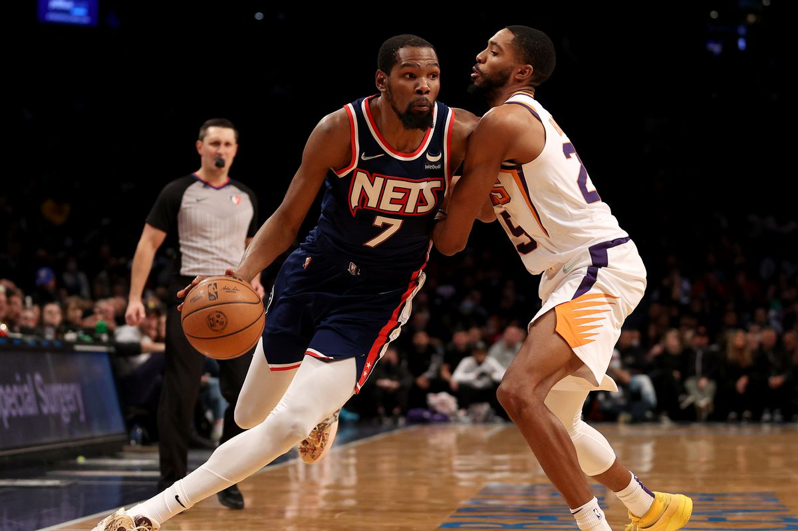

Se alguns ainda duvidavam da qualidade e Durant após uma lesão no Aquiles, o jogador provou o contrário e que está realmente saudável.
Durant teve médias de 34.3 pontos, 9.3 rebotes, 4.4 assistências, 1.5 roubos de bola e 1.6 tocos em 12 jogos dos playoffs, e muitos o consideram o melhor da liga atualmente.
Sempre quando existe um debate sobre o melhor jogador da liga, o nome de LeBron James é mencionado, mesmo com o jogador chegando a marca de 18 temporadas na carreira.
No programa "Get Up", da ESPN, a lenda do Lakers Magic Johnson e o analista Stephen A. Smith debateram quem está no topo neste momento. Johnson ficou do lado de James por conta de seu domínio geral do jogo, especialmente como ele eleva as habilidades de seus companheiros de equipe.
No entanto, discordou de Johnson e citou os lances livres para explicar por que Durant supera James:
“Vejo Kevin Durant, que tem mesma média de pontos que LeBron ao longo de sua carreira, 27 por jogo e ambos tem médias parecidas de rebotes. LeBron tem 73 por cento de arremessos de lances livres. Nos últimos três anos, ele arremessou menos de 70 por cento de lá. Kevin Durant tem mais de 85 por cento. É um atirador extraordinário. E quando eu analiso nessa perspectiva, eu apenas penso ofensivamente que há níveis para isso, e LeBron não está nesse nível. Não é nada contra LeBron, apenas mostra o nível de elegância que Kevin Durant tem.”
Embora James seja um rotineiro arremessador de lance livre, suas taxas de conversão são um aspecto de seu jogo que poderia ser melhorado. Mas, considerando o quão dominante James é, usar lances livres - tão importantes quanto eles podem ser - para classificar um jogador sobre o outro é uma comparação bastante peculiar.